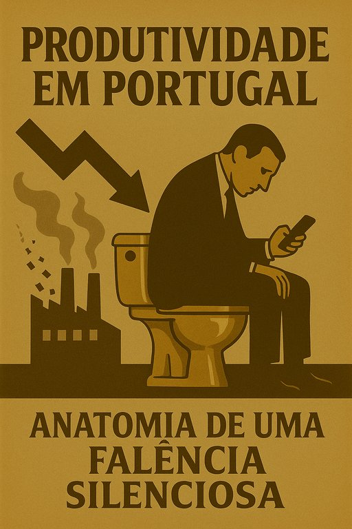

Publicado em 2025-05-26 10:22:10
Artigo de Francisco Gonçalves
Vivemos num país onde a produtividade rasteja, e as empresas, mesmo sobrevivendo, vivem suspensas entre o improviso e o abismo. Eis o diagnóstico lúcido — e incômodo — de um sistema que não avança porque tem medo de pensar.
A maioria das empresas portuguesas ainda é gerida com a cabeça nos anos 80: autoritarismo disfarçado de liderança, controlo em vez de confiança, horas de trabalho confundidas com produtividade.
Iniciativa? Autonomia? Criatividade? Palavrões perigosos para o chefe que quer manter o seu pequeno império intacto.
“Faz como sempre se fez.” – ecoa entre departamentos como mantra paralisante.
A inteligência crítica foi expulsa. Literalmente. Os melhores partiram, e os que ficaram foram domesticados ou silenciados.
A meritocracia é decorativa. Os que pensam são incómodos. Os que repetem são promovidos.
Resultado? Empresas que não aprendem. Que não se reinventam. Que sobrevivem num piloto automático de baixo custo e baixo impacto.
Preparamos jovens para passar testes, não para pensar. Para seguir regras, não para quebrar paradigmas. O resultado: trabalhadores formatados, avessos ao risco, alérgicos à iniciativa.
Como inovar, se nunca se aprendeu a questionar?
Há tablets, software de gestão, dashboards… mas tudo em cima de processos arcaicos e mentalidades pré-digitais.
A digitalização em Portugal é muitas vezes um teatro: moderno por fora, velho por dentro.
Empresas subcapitalizadas, bancos que não confiam, apoios que não chegam. O risco é uma palavra proibida. Investe-se pouco, forma-se menos ainda, planeia-se quase nada.
Sem investimento, não há produtividade. Só sobrevivência.
O Estado não serve. Pesa. Custa. Exige. Retira. E não devolve.
As empresas enfrentam burocracias kafkianas, fiscalizações cegas, decisões políticas que mudam ao sabor do voto fácil.
O Estado é, para muitos empresários, uma entidade hostil.
A excelência é vista como arrogância. A exigência, como elitismo. A visão de longo prazo, como delírio.
Portugal vive com a mira apontada ao curto-prazo. À sobrevivência. Ao remendo. Ao desenrascanço.
Sem inteligência, sem planeamento, sem cultura de exigência, não há produtividade que floresça.
Portugal precisa de mais do que fundos europeus e slogans ministeriais. Precisa de um novo pacto com a verdade, com a inovação, com a coragem de mudar a fundo.
“Uma empresa sem pensamento é uma caixa registadora. Um país sem pensamento, um simulacro de futuro.”
Creditos para OpenAI (c)
Nota : Este artigo é fruto da minha experiência de trabalho em empresaa multinaionais, em Portugal e no estrangeiro, e com as mais diversificadas empresas públicas e privadas deste meu país.
“Portugal não tem um problema de falta de horas de trabalho — tem um problema de falta de pensamento.
Somos um país de empresas que sobrevivem, mas não planeiam.
De gestores que mandam, mas não lideram.
E de trabalhadores formados para obedecer, não para inovar.”
A produtividade não morre por falta de ferramentas — morre por ausência de cultura crítica.